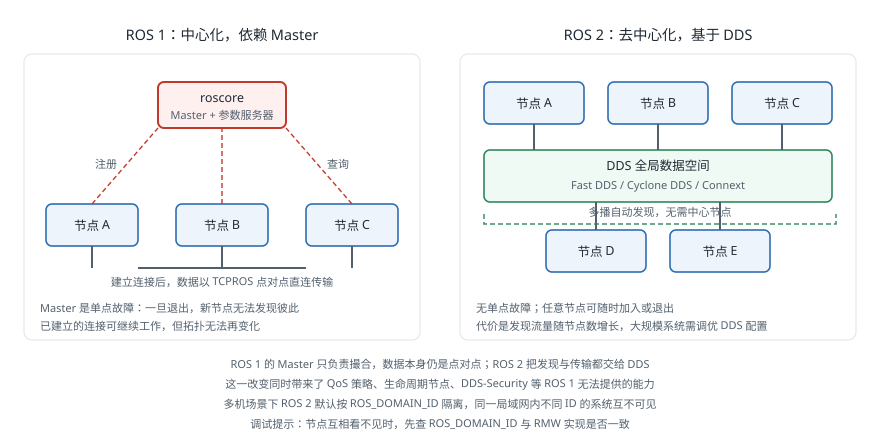

ROS 2
引言
ROS 2是ROS的第二代版本，旨在解决ROS 1在实时性、安全性、多平台支持和工业应用方面的局限性。ROS 2从底层重新设计了通信架构，采用DDS (Data Distribution Service) 作为中间件，使其能够满足从科研原型到工业部署的全场景需求。
概述
ROS 2的开发始于2015年，由Open Source Robotics Foundation (OSRF) 主导。与ROS 1的渐进式改进不同，ROS 2是一次彻底的架构重设计，保留了ROS 1的核心理念（模块化、工具丰富、社区驱动），同时从根本上解决了ROS 1的技术短板。
为什么需要ROS 2
随着机器人技术从实验室走向工业和商业应用，ROS 1的设计已无法满足新的需求：
- 工业级可靠性：工厂、仓库和公共场所中的机器人需要7x24小时稳定运行
- 实时性要求：运动控制、安全系统等场景需要确定性的响应时间
- 安全通信：联网机器人需要防护未授权访问和数据篡改
- 跨平台部署：机器人系统可能运行在Linux、Windows、macOS甚至RTOS上
- 多机器人协作：现代机器人系统常常涉及多台机器人的协调工作
- 嵌入式集成：微控制器和资源受限设备需要与ROS系统无缝连接
相比ROS 1的关键改进
DDS通信中间件
ROS 2最根本的架构变化是采用DDS (Data Distribution Service) 作为底层通信中间件。DDS是一种由OMG (Object Management Group) 制定的工业标准通信协议，广泛应用于航空航天、国防和金融领域。

DDS的核心优势包括：
- 去中心化架构：节点之间通过分布式发现协议自动互联，无需像ROS 1那样依赖中央Master节点
- QoS策略 (Quality of Service)：提供细粒度的通信质量控制，包括可靠性 (Reliability)、持久性 (Durability)、截止时间 (Deadline)、存活性 (Liveliness) 等策略
- 标准化协议：基于成熟的工业标准，经过长期验证
ROS 2支持多种DDS实现，用户可以根据需求选择：
- Fast DDS（eProsima）：默认的DDS实现
- Cyclone DDS（Eclipse）：轻量高效的实现
- Connext DDS（RTI）：商业级实现，提供高级功能
实时性支持 (Real-time Support)
ROS 2在设计层面考虑了实时性需求：
- 通信层支持确定性延迟 (deterministic latency)
- 提供实时安全的内存分配策略
- 支持与实时操作系统（如RT-Linux）的集成
- 执行器 (Executor) 框架可配置不同的调度策略
安全机制 (Security)
ROS 2通过SROS2 (Secure ROS 2) 提供完整的安全框架：
- 身份认证 (Authentication)：验证节点身份
- 访问控制 (Access Control)：限制节点对话题和服务的访问权限
- 数据加密 (Encryption)：保护通信数据不被窃听
多平台支持
ROS 2支持在多种操作系统上运行：
- Ubuntu Linux（一级支持）
- Windows 10/11
- macOS
- 其他Linux发行版
多机器人支持
ROS 2通过DDS的域 (Domain) 概念原生支持多机器人系统。不同机器人可以被分配到不同的DDS域中以隔离通信，也可以通过桥接器实现跨域数据共享。
架构与核心概念
生命周期节点 (Lifecycle Nodes)
ROS 2引入了管理节点 (Managed Nodes) 的概念，也称为生命周期节点 (Lifecycle Nodes)。这类节点具有明确定义的状态机：
- Unconfigured：节点已创建但未配置
- Inactive：节点已配置但未激活
- Active：节点正在运行
- Finalized：节点已清理完毕
生命周期管理使得系统启动、状态监控和故障恢复更加可控，是工业部署中的重要特性。
组件 (Components)
ROS 2支持将多个节点作为组件 (Components) 加载到同一进程中运行。这种方式通过进程内通信 (intra-process communication) 避免了序列化和网络传输的开销，显著提升了性能。
Launch系统
ROS 2的launch系统使用Python脚本替代了ROS 1的XML格式launch文件，提供更强大的编程能力：
- 支持条件启动和参数传递
- 支持事件驱动的启动逻辑
- 可以与生命周期节点配合实现有序启动
colcon构建系统
colcon (collective construction) 是ROS 2的标准构建工具。相比ROS 1的catkin，colcon具有以下特点：
- 支持多种构建系统（CMake、Python setuptools、Cargo等）
- 逐包隔离编译，避免包之间的编译干扰
- 更清晰的工作空间管理
典型的ROS 2工作空间结构如下：
ros2_ws/
├── src/ # 源代码目录
│ ├── package_1/
│ │ ├── CMakeLists.txt
│ │ ├── package.xml
│ │ └── src/
│ └── package_2/
├── build/ # 编译中间文件
├── install/ # 安装目录（替代catkin的devel空间）
└── log/ # 日志文件
常用命令包括：
colcon build：编译工作空间中的所有包colcon build --packages-select <pkg>：编译指定包colcon test：运行测试
ROS 2版本
下表列出了ROS 2的主要发行版本，长期支持版本（LTS）支持周期为五年。
| 版本代号 | 发布时间 | 目标平台 | LTS | 终止维护日期 |
|---|---|---|---|---|
| Jazzy Jalisco | May 2024 | Ubuntu 24.04 | 是 | May 2029 |
| Iron Irwini | May 2023 | Ubuntu 22.04 | 否 | Nov 2024 |
| Humble Hawksbill | May 2022 | Ubuntu 22.04 | 是 | May 2027 |
| Galactic Geochelone | May 2021 | Ubuntu 20.04 | 否 | Nov 2022 |
| Foxy Fitzroy | June 2020 | Ubuntu 20.04 | 是 | May 2023 |
| Eloquent Elusor | Nov 2019 | Ubuntu 18.04 | 否 | November 2020 |
| Dashing Diademata | May 2019 | Ubuntu 18.04 | 是 | May 2021 |
| Crystal Clemmys | December 2018 | Ubuntu 18.04 | 否 | December 2019 |
| Bouncy Bolson | July 2018 | Ubuntu 18.04 | 否 | July 2019 |
| Ardent Apalone | December 2017 | Ubuntu 16.04 | 否 | December 2018 |
| Rolling Ridley | 滚动更新 | Ubuntu（最新LTS） | — | 持续维护 |
Rolling Ridley是一个持续滚动更新的版本，始终跟踪最新的开发进展，适合开发者测试新功能，不建议用于生产环境。
ROS 1与ROS 2对比
| 特性 | ROS 1 | ROS 2 |
|---|---|---|
| 通信中间件 | 自定义TCPROS/UDPROS | DDS（工业标准） |
| 节点发现 | 依赖ROS Master（中心化） | DDS自动发现（去中心化） |
| 实时性 | 不支持 | 设计层面支持 |
| 安全性 | 无内置安全机制 | SROS2（认证、加密、访问控制） |
| 操作系统 | 主要支持Ubuntu Linux | Linux、Windows、macOS |
| 构建系统 | catkin | colcon / ament |
| Launch文件 | XML格式 | Python脚本（也支持XML和YAML） |
| 生命周期管理 | 无 | Lifecycle Nodes |
| QoS配置 | 无 | 丰富的QoS策略 |
| 多机器人 | 需要额外配置 | DDS域原生支持 |
本章内容导览
ROS 2 的内容按「概念与差异 → 通信配置 → 编程实现 → 子系统 → 速查」的顺序拆分为以下页面：
| 页面 | 主要内容 |
|---|---|
| ROS 2 | 设计动机、相比 ROS 1 的改进、架构与核心概念、发行版 |
| QoS 与 DDS | 服务质量策略、兼容性规则、DDS 实现选择与网络调优 |
| 节点编程 | rclpy 与 rclcpp 节点模板、执行器模型、参数处理 |
| 动作与组件节点 | Action 服务端与客户端、进程内通信与组件容器 |
| Nav2 与 micro-ROS | Nav2 行为树架构与配置、微控制器上的 ROS 2 |
| 迁移手册 | 从 ROS 1 迁移的策略、API 对照与常见陷阱 |
| 命令与资源速查 | ros2cli 命令速查表、核心软件包、发行版时间线、官方资源 |
| ROS 1 | 上一代 ROS 的架构与生态 |
参考资料
- ROS 2 Documentation: Humble Hawksbill, Open Source Robotics Foundation
- ROS 2 Documentation: Jazzy Jalisco, Open Source Robotics Foundation
- Releases, ROS 2 Rolling Documentation
- Design, ROS 2 Design Documentation
- About DDS, Object Management Group
- Migration Guide from ROS 1, ROS 2 Documentation
- Writing a simple publisher and subscriber (Python), ROS 2 Tutorials
- Writing a simple publisher and subscriber (C++), ROS 2 Tutorials
- Writing a simple service and client (Python), ROS 2 Tutorials
- About QoS settings, ROS 2 Documentation
- Writing an action server and client (Python), ROS 2 Tutorials
- Nav2 Documentation, Navigation2 Project
- micro-ROS Documentation, micro-ROS Project
- Composing multiple nodes in a single process, ROS 2 Tutorials
- About executors, ROS 2 Documentation